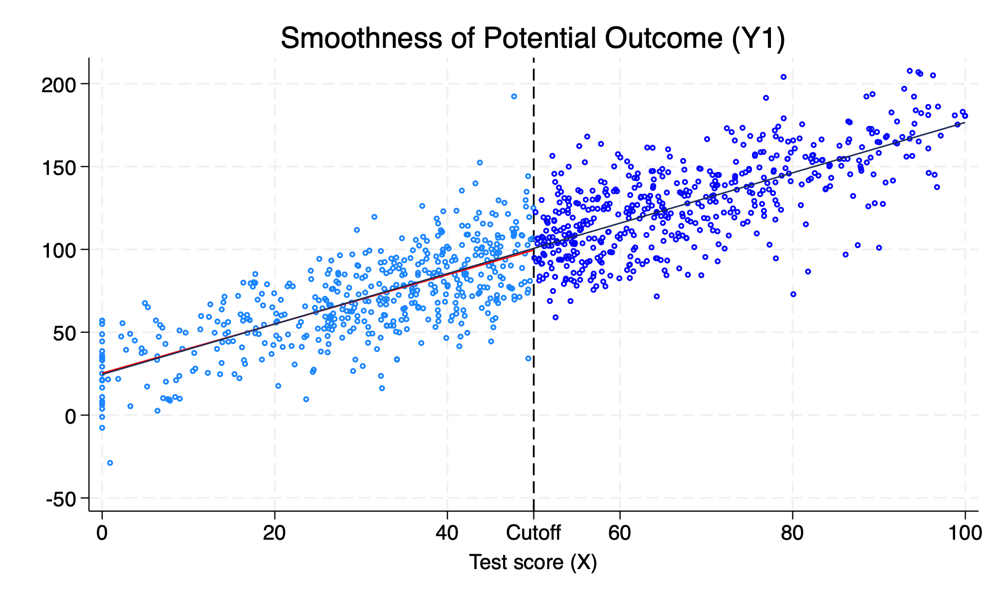
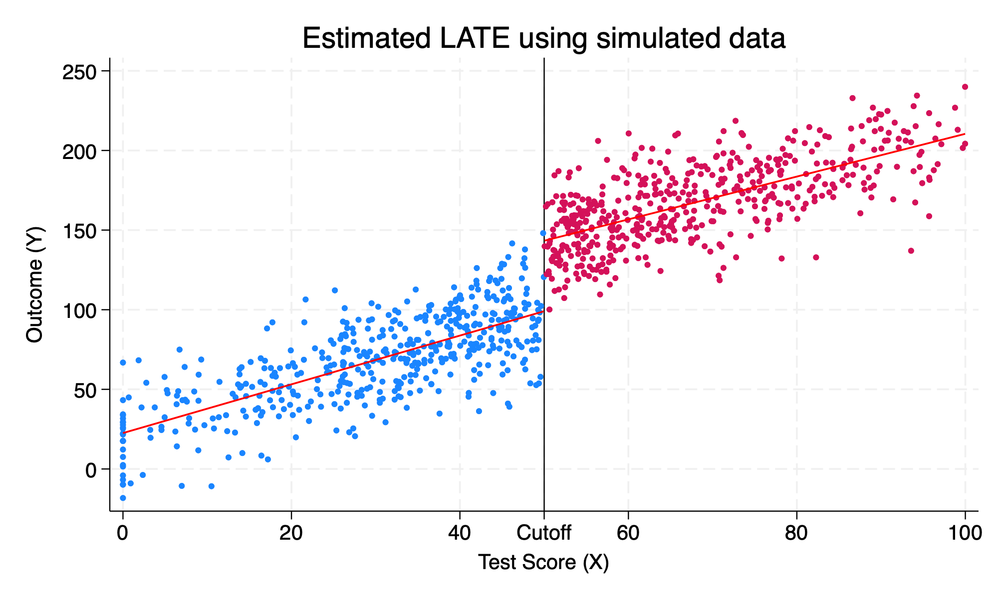
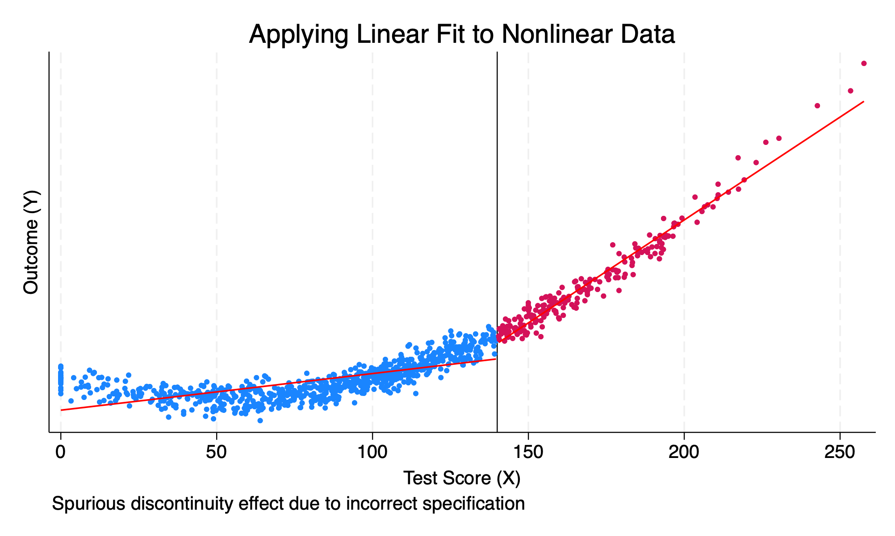
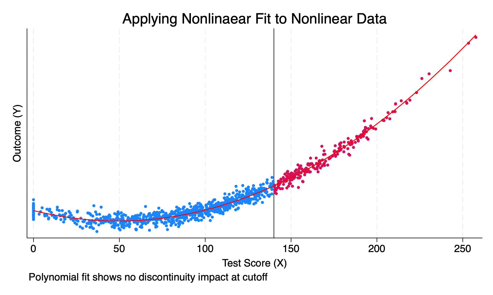

Chapter 1 Continuity Assumption
We will simulate the continuity assumption with fake data. We cannot directly test the continuity assumption, but we will simulate it to see what it looks like.
1.1 Simulate Continuity Assumption
We will set our observation count to 1,000 and set a seed for reproducible results.
Next, we will generate our fake running variable
(24 real changes made)
(11 observations deleted)
x
-------------------------------------------------------------
Percentiles Smallest
1% 0 0
5% 7.581868 0
10% 17.55611 0 Obs 989
25% 32.95432 0 Sum of wgt. 989
50% 50.69007 Mean 49.34681
Largest Std. dev. 23.25304
75% 65.28811 99.0975
90% 80.07679 99.70067 Variance 540.7037
95% 88.76378 99.97297 Skewness -.0798667
99% 96.25841 99.97885 Kurtosis 2.44414Now we will generate the cutoff point at \(X=50\) and when \(X >= 50\) our units of observation are considered treated. We will create a data generation process with \(\alpha=25\) and \(y\) is a function of the running variable \(1.5*x\).
Here we have an example of \(Y^1\) not jumping at the cutoff. The potential outcomes are smooth across the discontinuity. Notice that the data generation process had \(0*D\), such that \(\delta^{LATE}=0\)
twoway (scatter y1 x if D==0, msize(vsmall) msymbol(circle_hollow)) ///
(scatter y1 x if D==1, sort mcolor(blue) msize(vsmall) msymbol(circle_hollow)) ///
(lfit y1 x if D==0, lcolor(red) msize(small) lwidth(medthin) lpattern(solid)) ///
(lfit y1 x, lcolor(dknavy) msize(small) lwidth(medthin) lpattern(solid)), ///
xtitle(Test score (X)) xline(50) legend(off) xlabel(0 "0" 20 "20" 40 "40" ///
50 "Cutoff" 60 "60" 80 "80" 100 "100") ///
title("Smoothness of Potential Outcome (Y1)")
1.2 Simulate the discontinuity
We will set the discontinuity or the \(LATE\) equal to \(40\) or \(\delta^{LATE}=40\). In our prior example, \(\delta^{LATE}=0\) and then replot the data. Now our data generation process will show that there is a disconinuous jump at the cutoff.
gen y = 25 + 40*D + 1.5*x + rnormal(0, 20)
scatter y x if D==0, msize(vsmall) || ///
scatter y x if D==1, msize(vsmall) ///
legend(off) xline(50, lstyle(foreground)) || ///
lfit y x if D ==0, color(red) || lfit y x if D ==1, ///
color(red) title("Estimated LATE using simulated data") ///
ytitle("Outcome (Y)") xtitle("Test Score (X)") ///
xlabel(0 "0" 20 "20" 40 "40" ///
50 "Cutoff" 60 "60" 80 "80" 100 "100")
We can see that \(\delta=40\) increase in the outcome, \(Y\).
1.3 Nonlinear data generation process
What happens when the data generation process is nonlinear? We need to be careful with the \(RDD\) design to not impose a linear fit to nonlinear data and assume a discontinuous jump.
We will set the cutoff at \(X=140\), where \(D\) is treated if \(X > 140\). Due to the functional form, there isn’t a discontinuous jump at 140. However, our RDD design it shows that there is a discontinous jump.
set obs 1000
gen x = rnormal(100, 50)
replace x=0 if x < 0
drop if x > 280
sum x, det
gen D = 0
replace D = 1 if x > 140
gen x2 = x*x
gen x3 = x*x*x
gen y = 10000 + 0*D - 100*x +x2 + rnormal(0, 1000)
reg y D xNumber of observations (_N) was 0, now 1,000.
(27 real changes made)
(0 observations deleted)
x
-------------------------------------------------------------
Percentiles Smallest
1% 0 0
5% 17.31924 0
10% 31.99439 0 Obs 1,000
25% 65.85717 0 Sum of wgt. 1,000
50% 97.70168 Mean 98.30952
Largest Std. dev. 48.48283
75% 131.2771 226.1029
90% 161.7696 226.2729 Variance 2350.585
95% 179.7875 230.622 Skewness .0477416
99% 207.1802 239.7431 Kurtosis 2.600393
(201 real changes made)
Source | SS df MS Number of obs = 1,000
-------------+---------------------------------- F(2, 997) = 2093.02
Model | 2.6076e+10 2 1.3038e+10 Prob > F = 0.0000
Residual | 6.2106e+09 997 6229245.75 R-squared = 0.8076
-------------+---------------------------------- Adj R-squared = 0.8073
Total | 3.2286e+10 999 32318766.1 Root MSE = 2495.8
------------------------------------------------------------------------------
y | Coefficient Std. err. t P>|t| [95% conf. interval]
-------------+----------------------------------------------------------------
D | 6340.628 278.2154 22.79 0.000 5794.672 6886.583
x | 61.58662 2.300816 26.77 0.000 57.07162 66.10162
_cons | 4876.251 206.5207 23.61 0.000 4470.986 5281.517
------------------------------------------------------------------------------We estimte that the \(LATE\) is equal to \(6340.6\). However, we can visualize the incorrect RDD by imposing a linear function form onto a nonlinear function
scatter y x if D==0, msize(vsmall) || scatter y x ///
if D==1, msize(vsmall) legend(off) xline(140, ///
lstyle(foreground)) ylabel(none) || lfit y x ///
if D ==0, color(red) || lfit y x if D ==1, ///
color(red) xtitle("Test Score (X)") ///
ytitle("Outcome (Y)") title("Applying Linear Fit to Nonlinear Data") ///
caption("Spurious discontinuity effect due to incorrect specification")
We will now model the RDD using a polynomial instead of a linear function.
Source | SS df MS Number of obs = 1,000
-------------+---------------------------------- F(4, 995) = 7798.40
Model | 3.2207e+10 4 8.0518e+09 Prob > F = 0.0000
Residual | 1.0273e+09 995 1032494.42 R-squared = 0.9691
-------------+---------------------------------- Adj R-squared = 0.9690
Total | 3.3235e+10 999 33267799.9 Root MSE = 1016.1
------------------------------------------------------------------------------
y | Coefficient Std. err. t P>|t| [95% conf. interval]
-------------+----------------------------------------------------------------
D | 44.96491 147.8125 0.30 0.761 -245.0952 335.025
x | -106.7774 5.371053 -19.88 0.000 -117.3173 -96.23752
x2 | 1.083471 .0586708 18.47 0.000 .9683381 1.198604
x3 | -.0002625 .0001779 -1.48 0.141 -.0006117 .0000867
_cons | 10081.61 139.5867 72.22 0.000 9807.687 10355.52
------------------------------------------------------------------------------
(option xb assumed; fitted values)We fail to reject the null hypothesis that \(H_0: \delta = 0\).
We can visualize the correct functional form, and we can see that the functional form is smooth and continuous.
scatter y x if D==0, msize(vsmall) || scatter y x ///
if D==1, msize(vsmall) legend(off) xline(140, ///
lstyle(foreground)) ylabel(none) || line yhat x ///
if D ==0, color(red) sort || line yhat x if D==1, ///
sort color(red) xtitle("Test Score (X)") ///
ytitle("Outcome (Y)") title("Applying Nonlinaear Fit to Nonlinear Data") ///
caption("Polynomial fit shows no discontinuity impact at cutoff")